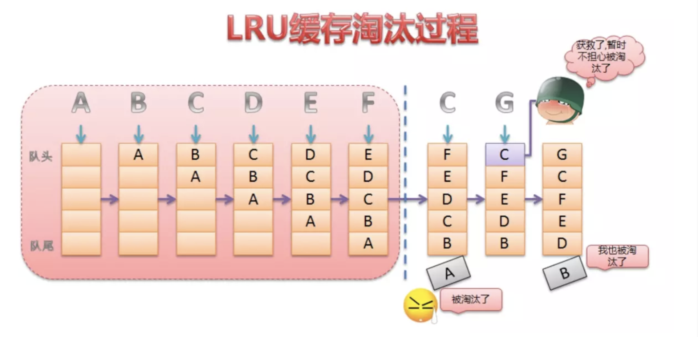

Bitmap内存管理
Android中图片是以bitmap形式存在的，那么bitmap所占内存，直接影响到了应用所占内存大小，首先要知道bitmap所占内存大小计算方式：
图片长度 x 图片宽度 x 一个像素点占用的字节数
像素格式：
ARGB_8888: ARGB 各占8位，内存为 Width * Height * 4
RGB565: R 5位，G 6位 ，B 5位，内存 Width * Height *2
Bitmap存储位置变迁：
android 3.0 以前的版本Bitmap对象的内存是在native层分配的，不会占用java的内存。
Android 3.0 之后 Bitmap对象的内存统一交由jvm进行分配。方便内存管理。
而Android 8.0 之后的版本，Bitmap对象的内存又交给native管理。
1 | 如果在jvm中，在GC是会自动调用bitmap.recycle() |
图片压缩：
质量压缩
图片的大小是没有变的，因为质量压缩不会减少图片的像素，它是在保持像素的前提下改变图片的位深及透明度等，来达到压缩图片的目的，这也是为什么该方法叫质量压缩方法。
Bitmap.compress(Bitmap.CompressFormat.PNG, quality, outStream)
1 | /** |
说明：
- 使用该方法压缩图片，不能改变图片的宽高，每个像素的大小也不会改变，所以图片在内存的大小也不会改变。
- 第二参数是压缩比重，图片存储在磁盘上的大小会根据这个值改变，值越小占用磁盘的内存也小。
- 第一个参数，图片的格式，如果是.png格式,图片大小不会改变，因为png图片是无损。
采样率压缩
inSampleSize/inJustDecodeBounds
1 | var options = newBitmapFactory.Options(); |
获取采样率的方法和步骤：
- 将 BitmapFactory.Options 的 inJustDecodeBounds 参数设置为 true；
- 从 BitmapFactory.Options 中取出图片的原始宽高信息，也就是 outWidth 和 outHeight 参数；
- 结合目标 View 所需大小来计算所需采样率 inSampleSize；
- 将 BitmapFactory.Options 的 inJustDecodeBounds 设置为 false，重新加载图片。
设置 inJustDecodeBounds 参数为 true 时只会解析图片的宽/高信息，并不会去加载图片，所以该操作是轻量级的。
缩放法压缩（martix）
1 | var matrix = Matrix(); |
*只要改变图片的 宽/高/每个像素占用的字节数 中的其中一个就能达到压缩效果 *
Android Bitmap缓存策略
- LruCache：内存缓存
- DiskLruCache：磁盘缓存
LruCache:
LRU (Least Recently Used) :最近最少使用算法，核心思想，当缓存满了，会优先把近期最少使用的缓存对象淘汰掉。

LinkedHashMap是由数组+双向链表的数据结构来实现的。其中双向链表的结构可以实现访问顺序和插入顺序，使得LinkedHashMap中的<key,value>对按照一定顺序排列起来。
使用：
1 | val cacheSize: Int = (Runtime.getRuntime().totalMemory() / 1024 / 8).toInt() |
DiskLruCache
DiskLruCache 的缓存添加操作是通过 Editor 完成的。
例如缓存图片，首先获取 url 所对应的 key（使用加密算法处理避免 url 字符违法），然后通过edit()来获取 Editor 再获取输出流将文件输出到磁盘上，最后一定记得commit()。
1 | /** |
总结：
- 进行Bitmap优化的方式有三种：
- 对图片质量进行压缩
- 对图片尺寸进行压缩
- 使用libjpeg.so库进行压缩，
- 加载大图片或者一次性加载多张图片，应该在异步线程中进行。图片的加载，涉及到 IO 操作，以及 CPU 密集操作，很可能引起卡顿
- png 图片使用 tinypng 或者类似工具压缩处理，减少包体积。
- 使用完毕的图片，应该及时回收，释放宝贵的内存。
- 针对不同的屏幕密度，提供对应的图片资源，使内存占用和显示效果达到合理的平衡。如果为了节省包体积，可以在不影响 UI 效果的前提下，省略低密度图片。